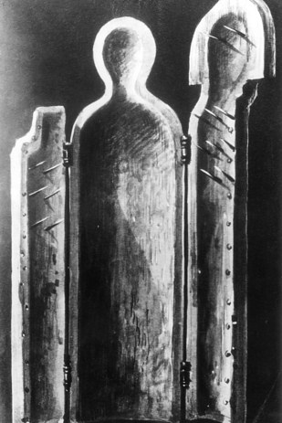
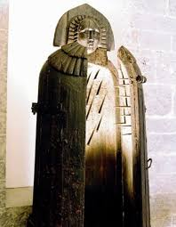

Donzella de Ferro
La donzella de ferro (en alemany: Eiserne Jungfrau) va ser un instrument suposadament utilitzat per a la tortura i execució. Possiblement la primera donzella de ferro va ser construïda a Nuremberg, Alemanya. Pel que sembla, la primera persona executada per aquest mitjà va ser un falsificador de monedes el 14 d'agost de 1515, segons va afirmar Johann Philipp Siebenkees en 1793, encara que la veracitat d'aquest fet es troba en entredit. La donzella de ferro de Nuremberg va ser en realitat construïda al segle XIX com a resultat d'una mala interpretació del Schandmanter (capa de la infàmia). Es tractava d'un dispositiu fet de fusta i llautó però sense punxes, que no danyava el cos i que era utilitzada com a càstig públic per caçadors furtius i prostitutes, que havien de portar-lo en públic cert temps.
Al segle XVII es comptava i encara s'explica que Erzsébet Báthory va utilitzar la donzella de ferro contra els seus donzelles per obtenir així més sang de les seves víctimes per aconseguir l'eterna joventut.
La donzella de ferro apareix en la literatura romàntica i a partir d'aquí es popularitza. Per exemple, Bram Stoker va escriure una història curta sobre la donzella de ferro anomenada The Iron Maiden (1893).
El seu ús com a dispositiu de tortura en compliment de sentències judicials en l'Edat Mitjana és probablement fals. Si es va utilitzar, va ser a partir del segle XIX amb fins macabres.
La banda de heavy metal Iron Maiden es va inspirar en aquest objecte per nomenar el seu grup.